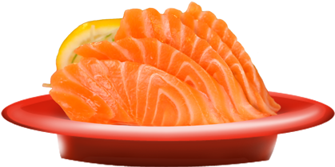

My recipe
Introduction
Today I'll be teaching you how to make salmon sashimi.
I like this food because it has a good amount of fat and protien and can taste good.

Ingredients
You will need:
- A whole sashimi grade salmon
- A tube of wasabi
- A bottle of soy sauce
Intructions
- Prepare a cutting board and a sharp knife.
- Clean and descale the salmon the best you can.
- Place salmon onto cutting board.
- Fillet the salmon with the knife and remove any bones with the knife or tweezer's.
- Cut the bone free fillet's into ½, ¼ segments using a clean knife.
- Cut the ½ or ¼ segements into slices of personal choice.
- After cutting place the meat onto a plate.
- Grab a small bowl and add the desirable amount of soy sauce and wasabi.
- Enjoy your homemade sashimi!